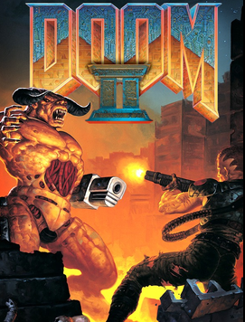
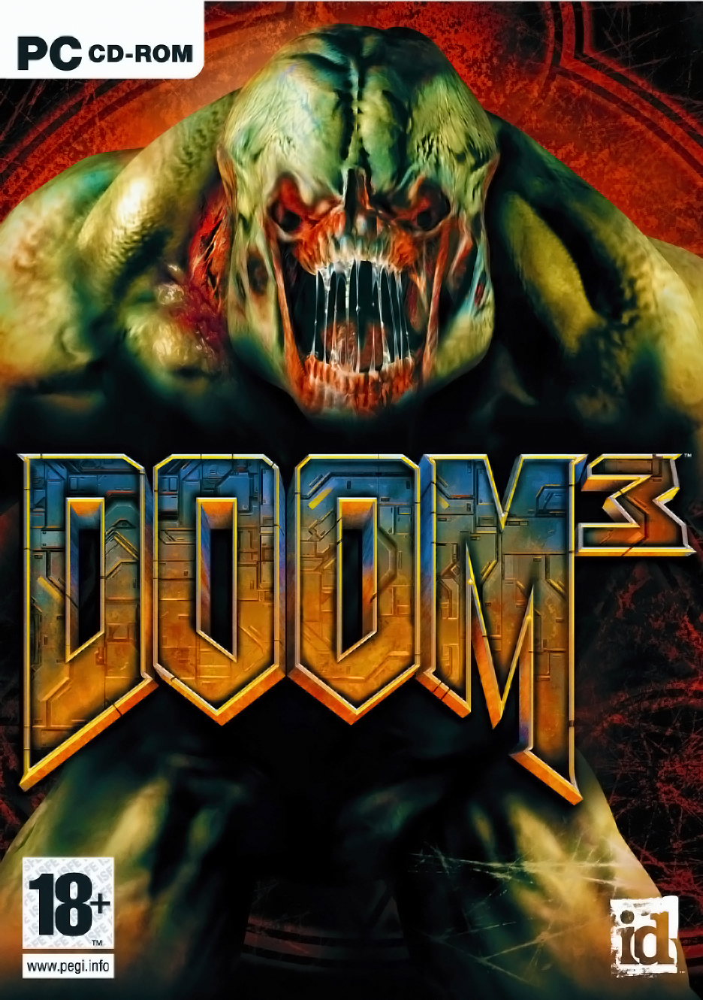

En la portada de Doom, el protagonista del juego está de pie en una elevación, con una
ametralladora en la mano luchando
contra los monstruos infernales que se asemejan mucho a Barones del infierno; uno de
estos monstruos está agarrando su
muñeca izquierda, y otro está lanzando una bola de fuego hacia él.

Titulos
Doom II: (1994)
"Hell on Earth"
En la portada de Doom II, lo que parece ser el protagonista de la serie, mostrando un
inusual corte de pelo, está
luchando contra un Ciberdemonio portando una escopeta.

Titulos
Doom 3 (2004)
El diseño de portada de Doom 3 presenta la imagen renovada de un Caballero del infierno,
en su nuevo aspecto más
elaborado, detrás del logotipo de Doom 3.
Titulos
Doom (2016)
La portada del relanzamiento Doom (2016) representa solamente al infante de marina con
una escopeta de doble caño.
Después de las quejas de los fans, también se incluyó en el envase una cubierta
reversible que recuerda a la Doom
original, presentando al marine en un paisaje infernal rodeado de demonios.
Titulos
Doom Eternal (2020)
Varios años después de los eventos del Doom de 2016, la Tierra ha sido invadida por
fuerzas demoníacas, eliminando al
60% de la población del planeta, bajo la ahora corrupta Union Aerospace Corporation
(UAC).


 Titulos
Titulos